記事LP 勝ち理由言語化ワーク
★013 TCB脂肪溶解からだ女性
売れている記事の制作判断を、次の記事制作者が再現できる思考フレームに抽象化した資料。
この資料の結論
この記事の勝ち筋は、自社CRで既に需要が確認できていた「足痩せ・セルライト・大根足」訴求に対して、市況に不足していた足痩せ特化のステップアンケ記事を素早く当てたこと。
制作判断の中心は3C分析。自社CRでは足痩せ訴求が取れていたが、それに対応する記事がなかった。競合や市況はお腹痩せ、部位別痩せ、通常記事が中心で、足痩せ特化かつステップアンケ型の導線は薄かった。そこで、自社で勝っていたピコ女性ステップアンケの構造をほぼそのまま残し、中身だけを脂肪溶解注射・足痩せ・セルライト悩みに置き換えた。
結果として、AXAD上では2026-04-20から2026-05-31の期間で利益9,763,317円。作成前の想定は100万から200万円規模だったため、想定以上のヒットになった。
1. 制作判断
なぜこの商材・市場・ターゲット・型を選んだのか
一番大きかった判断根拠は3C分析。自社CRでは足痩せ訴求が強く取れていた一方で、自社側に足痩せ訴求に対応した記事がなかった。つまり、広告側で需要は見えているのに、その受け皿となる記事が不足していた。
市場を見ると、競合はお腹痩せ、部位ごとに痩せられる、全身痩せのような訴求が中心だった。足痩せに特化している記事やクリエイティブキャンペーンは見当たりにくく、特にステップアンケ型の導線は薄かった。そこで、需要があることはCRで確認済み、かつ競合が狙っていない穴として「足痩せ特化」を選んだ。
ターゲットは、太ってはいないが足の太さにコンプレックスがあり、できるなら足痩せしたい20代女性。幅広い年代で取れていたが、配信状況と現状利益を見たときに、若めが取れている1課と3課に合わせるのが最もインパクトが出るという判断だった。
型はステップアンケート型。依頼としてステップアンケの横展開があったことに加え、市場で通常記事ばかり見ているユーザーに対して、新しい見せ方として提示できる。新鮮さで読み進めるきっかけを作り、その先に需要のある足痩せ訴求を置くことで、欲しいと思ってもらいやすい構造になると判断した。
| 3C | 見たこと | 制作判断への変換 |
|---|---|---|
| Customer | 自社CRで集まっているのは、太っていないが足の太さにコンプレックスがあり、足痩せしたい若年女性。直近1週間で81個のCPがあり、全TCB中5番目に利益が出ていて質も担保されていた。 | ターゲットを20代女性、悩みを足太り・セルライト・むくみ・大根足に寄せる。 |
| Competitor | 市況は部分痩せ訴求が多いが、お腹や部位別全般が中心。足特化は薄い。ナハトの記事は見たが、細部比較というより初期の方向性確認として参照。 | 市況に薄い「足痩せ特化」で差別化する。通常記事ではなくステップアンケ型で新鮮さを出す。 |
| Company | 自社動画CRで、足痩せ、セルライト、大根足、カリカリ、どろっと系が既に一定取れていた。自社にはピコ女性ステップアンケという勝ち構造もあった。 | CRで取れている訴求を記事に移植し、ピコ女性ステップアンケの構造を脂肪溶解からだ女性向けに置き換える。 |
参照した市場・競合・過去勝ち記事・広告・CR
- 自社で既に取れていた足痩せ・セルライト系の動画CR 4本。個別に「このCRからこの要素」と厳密に切り分けたというより、売れているCR群全体から、足痩せ、セルライト、大根足、カリカリ、全身理想像、0円オファーの要素を抽出した。
- 元ネタ記事は、★040_TCB-ピコレーザー女性_0円_中川_ステップアンケ_通常オファー_20260421。大枠構造はほぼそのまま残し、具体的な悩み・解決策・訴求を置き換えた。
- 競合としてナハトの記事を参照。URLは
https://sb-draft-preview.squadbeyond.com/articles/WexC-lBTNHXEfPPbQ/draft?token=a3ed597de6779a4484836ef6fd96fecd。ただしミクロなパーツ比較ではなく、ナハトもいるが自社CRの足痩せ需要とステップアンケの強みで差別化できる、という初期判断に使った。 - デザイン参考としてPinterest、雑誌、Instagram、TikTok的な若年女性向けの可愛いトンマナを参照した。
- FVの全身モデルの考え方では、雑誌の見せ方や颯太さんの意見も参考にした。足単体ではなく、全身バランスで「あ、いいな」と思わせる発想。
元ネタと今回の記事でCV地点や商材特性がどう違うか
CV地点自体に大きな変更はない認識。どちらも、記事内で教育し、無料カウンセリングや予約枠確認へ進ませる構造。ただし商材特性は、ピコレーザー女性から脂肪溶解注射・からだ女性に変わっているため、読者の悩み、理想像、不安の種類は置き換える必要があった。
ピコレーザー側は肌悩みを起点にできるが、今回の脂肪溶解からだ女性では、足の太さ、セルライト、むくみ、ダイエットしても変わらない、費用が高そう、痛みや傷跡が怖い、といった悩みに置き換えた。
その違いに対して何を足した・削った・変えたか
| 分類 | 内容 |
|---|---|
| 足した | 足痩せ特化、セルライト、大根足、むくみ、太もも、カリカリ美脚、この夏までに、全身モデルFV、若年女性向けピンク・リボン系デザイン、脂肪細胞の数という原因説明、脂肪溶解注射の不安質問。 |
| 削った | お腹痩せ中心、全身痩せ一般論、高級感・清潔感に寄せた白金デザイン、足単体FV、BAファーストビュー。BAファーストビューは検討すらしていなかった。 |
| 変えた | 元ネタのステップアンケ構造は残し、質問・選択肢・コピー・症例・FAQ・USPを脂肪溶解注射と足痩せ悩みに置き換えた。 |
| 残した | ステップアンケの大枠構造。悩み認識、情景想起、解決策への不安、商材紹介、CTA、追加教育という流れはそのまま。 |
実績から見た制作判断の妥当性
AXAD上では、2026-04-20から2026-05-31の期間で、記事013は広告費24,650,433円、CV2,415、売上34,413,750円、利益9,763,317円、CPA10,207円、ROAS139.6%。制作前は100万から200万円規模の利益を想定していたため、実績は想定を大きく上回った。
主戦場はMETA。METAだけで利益9,792,943円、CV2,318、CPA10,025円。課別ではTM1-3が利益5,854,125円、CV1,430、TM1-1が利益2,955,821円、CV717。制作時の「若めが取れている1課・3課に合わせるとインパクトが大きい」という判断は、実績上も支持される。
上位キャンペーン名にも、kei足特化喋り、足痩せオファー本編、太ももどろっと、足太い、太もも特化雑学、可愛い足太、彼氏より足太い などが並んでおり、記事側の足痩せ特化・太もも悩み・若年女性の見た目コンプレックスとの相性が良かったと整理できる。
2. 中の構造の大枠
型：どんな記事構造か。読者にどんな心理効果を起こす型か
型はステップアンケート型。構造は、FVで理想像とオファーを提示し、その下にいきなり質問を置く。質問は、読者の悩みを再認識させ、その悩みを解決したい生活シーンを想像させ、最後に脂肪溶解注射に対する不安を言語化させる。その後、あなたにおすすめなのがこれ、と自社商材を紹介し、USP、信頼要素、社会的証明、オファー、CTAへ進む。
CTAまでで一度、前半の情報だけで欲しくなった人を刈り取る。その後に、まだ教育が進んでいない人、まだ懸念が残っている人に対して、普通の脂肪溶解注射との比較、TCBの優位性、FAQ、予約手順、限定性を追加で見せる。
心理効果としては、潜在層というより顕在層に強い。脂肪溶解注射や部分痩せという解決策をある程度知っており、足の悩みも認識しているが、何らかの理由で踏み切れていない層に向けて、踏み切れない理由を言語化し、すぐに回収していく構造。
制作者の言葉で言えば、マニア層、解決認識がある層、オファーが強ければ買う層、他の脂肪溶解注射との違いがわかれば買う層に刺さる構造。問題認識、情景想起、感情喚起、原因説明、解決策提示、不安払拭、社会的証明、オファーという順番で、感情で欲しくさせた後に論理で納得させる。
デザイン：市場上位と比べて何を揃え、何を差別化したか
市場上位と意識的に揃えたわけではない。今回は市場上位を模倣するより、自社ピコ女性ステップアンケの勝ち構造と、自社CRで取れている足痩せ訴求を優先した。
市場や競合は白背景、金色、清潔感、高級感寄りの見せ方が多い印象だった。そこに対して、今回のターゲットは10代後半から20代の若い女性なので、ピンク、リボン、雑誌的、TikTokやInstagram的な可愛いトンマナにした。目的は「私向けに書かれている」と感じさせること。普段見ている可愛いものに近い記事が出てくることで、魅力的に感じたり、自分ごと化しやすくした。
ステップアンケ自体も差別化要素。市況には通常記事が多く、ナハトも制作していたが足元CRで停滞している情報があった。通常記事ばかり見ているユーザーに対して、アンケート型の新しい導線を出すことで、見慣れないものとして目に止まり、読み進めるきっかけになる。
コピー：過去勝ち訴求を残したのか、新規訴求を作ったのか。その理由
記事としての訴求は、過去勝ち記事の単純流用ではなく、足痩せ特化の新規訴求。ただし、CRで既に取れていた表現は記事内に移植している。具体的には、カリカリ、セルライト、大根足、太もも、足痩せ、0円、夏までに、といった要素。
理由は明確で、元々売れているCR訴求に合った記事がなかったから。市場にも足痩せ特化の記事が薄かったため、需要があるのに受け皿がない状態だった。そのため、記事側で足痩せ特化を作れば、市場にない記事かつ需要がある記事として独占しやすいと判断した。
大枠構造の流れ
| 順番 | 役割 | 内容 |
|---|---|---|
| 1 | 理想像と期待 | FVで全身モデル、カリカリ美脚、脂肪溶解注射、0円オファーを見せる。 |
| 2 | 問題認識 | Q1で足が太く見える、セルライト、むくみを選ばせる。 |
| 3 | 情景想起・共感 | Q2で着たい服、ダイエットしても変わらない、綺麗な人、彼氏と会う時を想起させる。 |
| 4 | 感情から論理へ | コンプレックス、BA、脂肪細胞の数という原因説明へ進む。 |
| 5 | 不安の言語化 | Q3で効果、リバウンド、痛み・傷跡、費用不安を聞く。 |
| 6 | 解決策と信頼 | TCBの脂肪溶解注射のUSP、社会的証明、0円オファーを見せる。 |
| 7 | 一度刈り取り | 最初のCTAで予約枠チェックへ誘導する。 |
| 8 | 追加教育 | CTA後に普通の脂肪溶解注射との比較、FAQ、予約手順、限定性を見せる。 |
3. パートごとの詳細解説
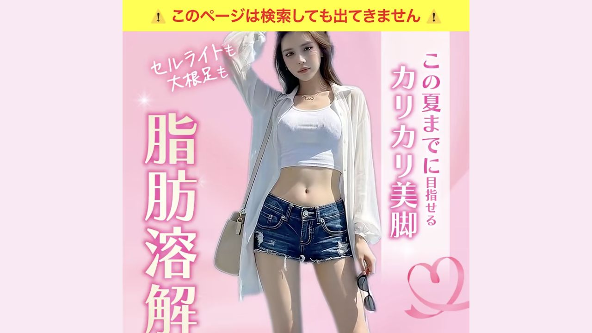
そのパートで見せている内容
中央に若い女性の全身モデル素材を置き、頭から足先まで見えるようにしている。左に大きく「脂肪溶解注射」、右に「この夏までに目指せる カリカリ美脚」、左上に「セルライトも 大根足も」。下部に特別クーポンとして、TCB脂肪溶解注射、通常19,800円から0円を大きく見せる。上部には「このページは検索しても出てきません」と希少性を出している。
読者心理に対する役割
FVの役割は不安払拭ではなく、まず「いいな」「こうなりたい」「希望がある」と思わせること。足だけ細いではなく、全身で見たときにスタイルがいい女性を見せることで、顔が小さい、足が綺麗、可愛い、スタイルがいいという総合理想を作る。脂肪溶解注射を知っているが避けていた人に、この方法でこんな理想を目指せるのか、という期待を作る。
売れている理由
最も強く見せたかったのはAI女性モデル素材。CRで既に使われ、売れていた素材の理想像を記事に移植しているため、一定の反応は確認済みだった。足痩せは下半身だけではなく全身バランスで理想になる。雑誌でも足だけを大きく見せるより、全身モデルでスタイルの良さを見せることが多い。全身FVは、ターゲットの感情を先に動かす。
BAをFVに出さなかったのは、現実の変化証明よりも理想像を先に出したかったから。BAは「こういう状態からこう変わった」を示すものだが、今回の足痩せでは下半身だけを見ても「こんな女性になりたい」という感情に直結しにくい。FVでは理想、後半で証明という役割分担にした。
横展開時に真似るべき点/変えるべき点
真似るべきは、FVでいきなり証明に入るのではなく、商材ごとの理想状態を最も感情的に伝える素材を選ぶこと。過去記事や市況記事のFVに縛られず、CRや雑誌、SNSなど、ターゲットが魅力を感じる見せ方から探す。変えるべき点は、商材とターゲットごとの理想像。若年女性の足痩せなら全身モデルが良いが、別商材ならBA、顔のアップ、生活シーン、男性向けベネフィットなどに変える。
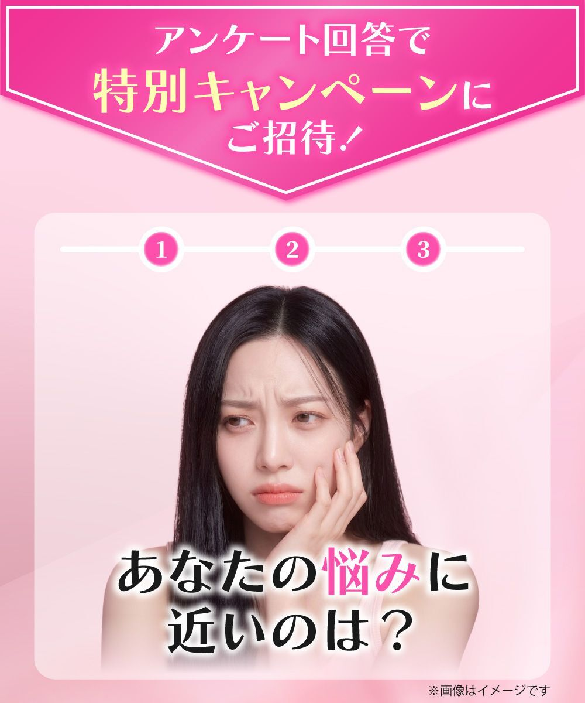
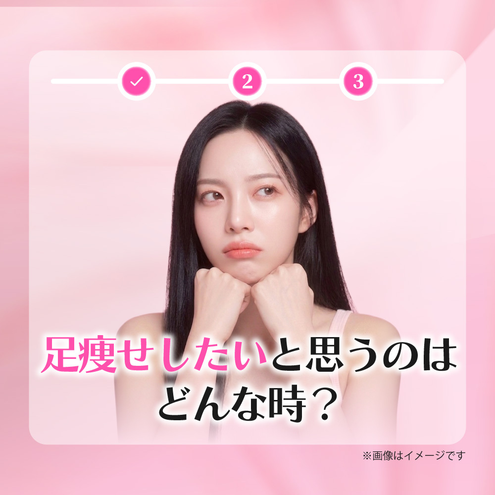
そのパートで見せている内容
「アンケート回答で 特別キャンペーンにご招待。」と提示し、3ステップの進捗バーを置く。Q1は「あなたの悩みに近いのは？」で、足が太く見える、セルライトを無くしたい、むくみがひどい、その他。Q2は「足痩せしたいと思うのはどんな時？」で、着たい服が着れないとき、ダイエットしても変わらないとき、スラっと綺麗な人を見たとき、彼氏と会うとき。Q3は「脂肪溶解注射に対して不安なことは？」で、効果、リバウンド、痛み・傷跡、費用を選ばせる。
読者心理に対する役割
表面上はアンケートに答えてキャンペーンに進む導線。裏面の役割は、悩み、欲求、不安を順番に再認識してもらうこと。Q1で問題認識、Q2で共感と情景想起、Q3で解決策に対する不安の言語化を行う。新しく悩みを作るというより、既にある悩みを改めて自分の中で言語化させる。
売れている理由
PASONAに近い流れになっている。人は問題を認識しないと買いたいと思わない。Q1で問題を認識させ、Q2で日常の嫌な状態や理想への欲求を具体化し、Q3で踏み切れない理由を出させる。選択肢は、CRで強かった足太い、セルライトと、検索や市場で見えるむくみを入れ、その他も置くことで、該当しない人も先に進める。
横展開時に真似るべき点/変えるべき点
真似るべきは、質問の順番。悩み、悩みが出るシーン、解決策への不安の順で聞く。変えるべきは選択肢。商材ごとに、CRで取れている悩み、市場でよく出る悩み、ターゲットが経験していそうな場面、解決策に対する不安を入れ替える。解決策を知らないターゲットなら、Q3を「脂肪溶解注射への不安」にするのではなく、どんな解決策があると思うか、など解決策認知を作る質問に変える必要がある。
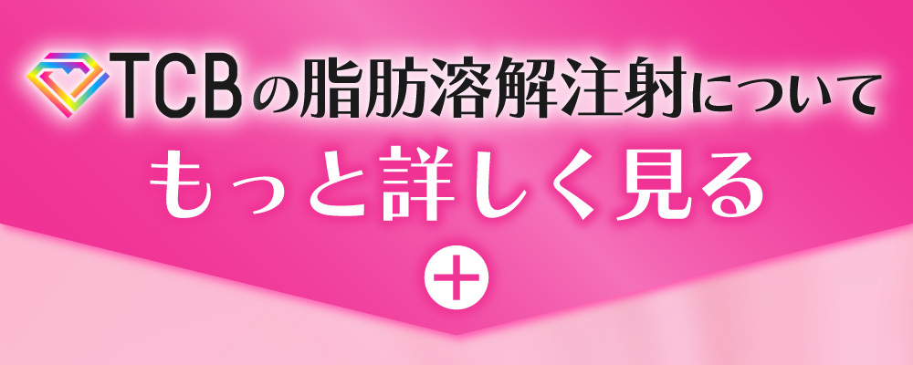
そのパートで見せている内容
「無料カウンセリング実施中」「今すぐ予約枠をチェックする」というCTA。記事全体がピンク基調の中で、ボタンは緑にして目立たせる。スクショでは伝わりにくいが、小さくなったり大きくなったりする動きがあり、静的な記事の中で急に動くことで押す場所だと認識させる。
読者心理に対する役割
CTAの役割は行動喚起なので、デザインの統一性よりも違和感と視認性を優先する。緑色、動き、文言で「あ、ここを押すんだ」と無意識にわかるようにする。「無料カウンセリング」はいきなり施術ではなく相談なのでハードルが低い。「予約枠をチェックする」は予約確定ではなく確認行動に見えるため押しやすい。「今すぐ」は即時行動を促すマイクロコピー。
売れている理由
CTAまでで、悩み認識、情景想起、解決策提示、不安回収、社会的証明、0円オファーまで見せている。前半だけで納得した顕在層をここで一度刈り取る構造になっている。押すハードルを「予約」ではなく「予約枠チェック」に下げている点も、クリックしやすさにつながる。
横展開時に真似るべき点/変えるべき点
真似るべきは、記事全体の色とCTA色をあえてズラすこと、動きで押しどころを作ること、文言を低ハードル化すること。変えるべきは、商材ごとのCV地点に合わせた文言。予約、相談、診断、資料請求、枠確認など、押した瞬間に何が起きるかを怖く見せない表現にする。
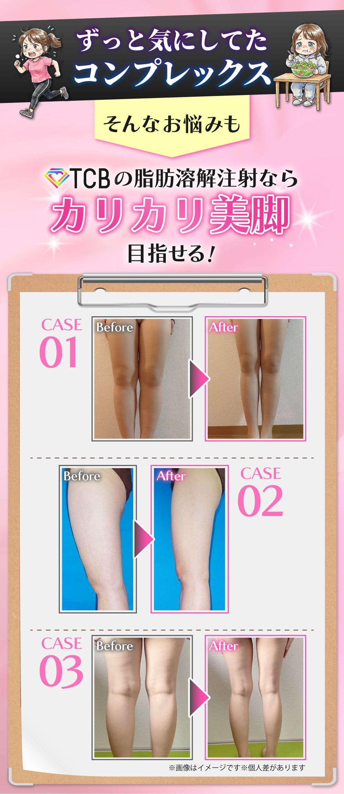
そのパートで見せている内容
「ずっと気にしてたコンプレックス」という見出しと、運動している女性、サラダを食べている女性のイラスト。努力してきたが変わらなかったことを視覚的に示している。
読者心理に対する役割
読者に「これ自分のことだ」と一瞬で思わせる。足痩せに悩む10代後半から20代女性は、運動や食事制限を試したことがある可能性が高い。努力しても変わらなかった経験を先に拾うことで、読者を責めずに寄り添う。
売れている理由
いきなり施術紹介に入らず、まず感情に寄り添うため、売り込み感が弱まる。人は感情で欲しいと思い、その後で論理で納得する。ここは感情を動かす入口として機能している。
横展開時に真似るべき点/変えるべき点
真似るべきは、読者が過去に試したがダメだった対策を見せること。変えるべきは、その商材の読者が実際にやっていそうな努力。美容医療ならセルフケア、運動、食事制限、スキンケアなど、商材ごとの失敗体験に合わせる。
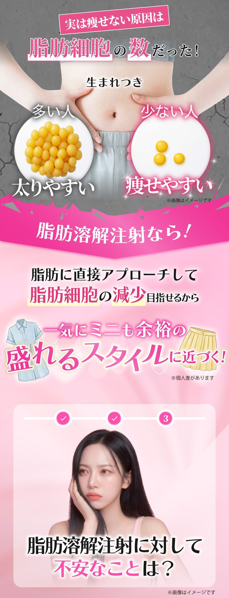
そのパートで見せている内容
「TCBの脂肪溶解注射なら カリカリ美脚 目指せる！」と提示し、さらに「実は痩せない原因は脂肪細胞の数だった！」と説明する。生まれつき脂肪細胞が多い人は太りやすく、少ない人は痩せやすいという対比を見せ、脂肪溶解注射なら脂肪に直接アプローチして脂肪細胞の減少を目指せるとつなげる。
読者心理に対する役割
痩せない原因を本人の努力不足ではなく、脂肪細胞の数というメカニズムに置く。あなたが悪いのではなく、生まれつきの体の仕組みだから仕方ない、という逃げ道を作り、その上で脂肪溶解注射なら直接アプローチできると納得させる。
売れている理由
感情で「良さそう」と思わせた後に、論理で「だから痩せなかったのか」「だからこの施術が合うのか」と納得させている。原因説明と解決策がつながることで、施術が単なる宣伝ではなく合理的な選択に見える。
横展開時に真似るべき点/変えるべき点
真似るべきは、読者を責めずに原因を構造化し、その原因に対して商材がどうアプローチするかを説明すること。変えるべきは原因の中身。商材ごとに、肌、髪、体型、痛み、料金、習慣など、読者が納得しやすい原因を選ぶ。
そのパートで見せている内容
Before/Afterを3ケース提示。CASE01は正面からの足、CASE02は横から見た足、CASE03は後ろから見た足。足の太さ、スラっと感、セルライトっぽい段差や見え方を複数角度から示している。
読者心理に対する役割
「本当に変わるのか」という効果不安に対して、視覚的な期待感を出す。足痩せは正面だけでなく、横、後ろ、セルライト感も気になるため、複数角度で示すことで自分の悩みに当てはめやすくなる。
売れている理由
FVでは理想像を見せ、ここでは変化の証明を見せるという役割分担になっている。FVにBAを置くと理想像の感情喚起が弱くなるが、教育パートにBAを置くことで、欲しい気持ちが高まった後に「実際に変わりそう」と補強できる。
横展開時に真似るべき点/変えるべき点
真似るべきは、読者が気にしている角度や部位を複数見せること。変えるべきは見せる証拠の種類。商材によってはBA、症例、数値、医師説明、口コミ、比較表などが適切になる。
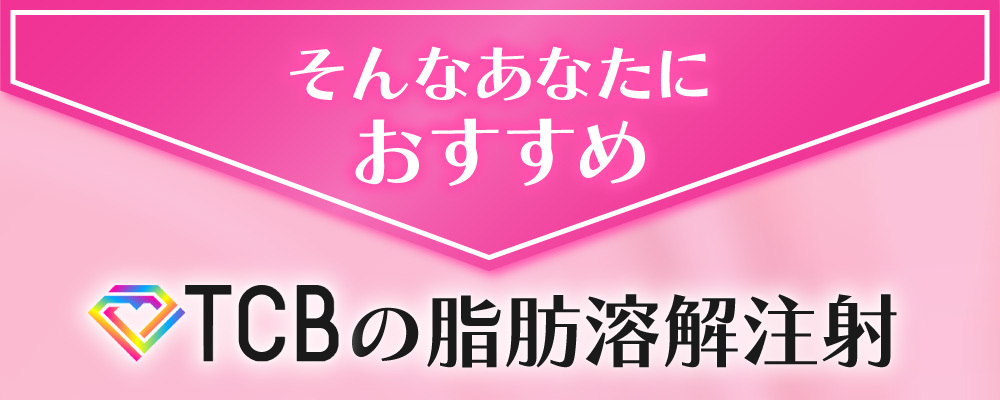
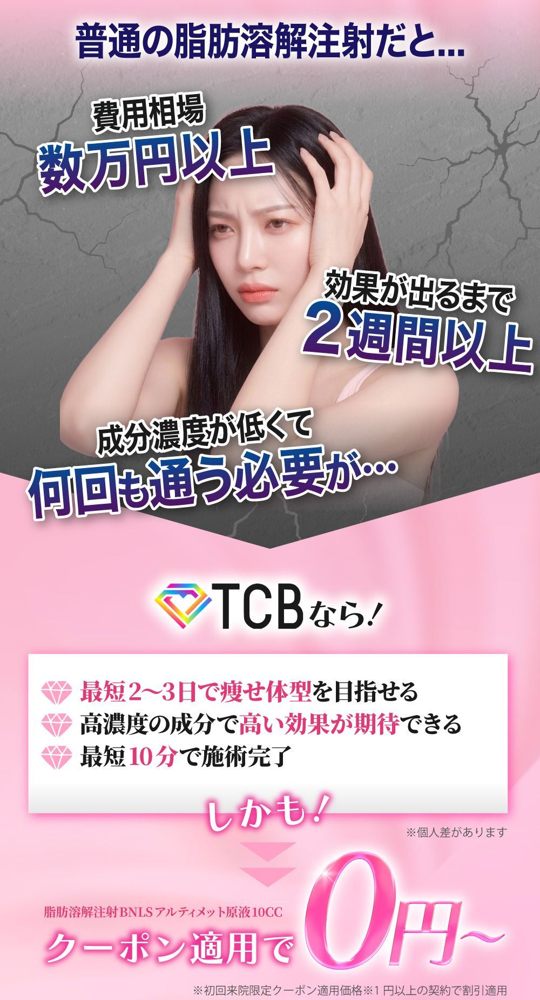
そのパートで見せている内容
Q3で「脂肪溶解注射に対して不安なことは？」と聞き、本当に効果があるのか不安、痩せてもリバウンドしそう、痛み・キズ跡が残りそうで怖い、費用が高そう、を選択肢にする。その後「そんなあなたにおすすめ TCBの脂肪溶解注射」として、リバウンドほぼなし、1回の注射から実感しやすい、痛み・キズ跡ほぼなしを提示する。
読者心理に対する役割
顕在層は脂肪溶解注射を知っているのに、何かが理由でやっていない。その理由をこちらから言語化してあげる。読者は「そう、それが不安だった」と思い、その直後に回答を見るため、納得しやすい。
売れている理由
不安を出すだけでなく、理由つきで回収している。リバウンドには脂肪細胞自体へアプローチする施術だから痩せ体質を目指せる、と説明。効果不安には、1回の注射から実感しやすい、最短10分、最短2から3日で効果を期待、と説明。痛み・傷跡には、髪の毛くらいの極細針だからほとんどない、と説明。単に大丈夫と言わず、理由を添えることで説得力が出る。
横展開時に真似るべき点/変えるべき点
真似るべきは、顕在層が踏み切れていない理由を質問で出し、その直後に回収すること。変えるべきは不安の種類と優先順位。今回のCTA時点では費用、フォーム遷移、施術への怖さの順だったが、商材によって効果不安、料金不安、感情不安、行動不安の重さは変わる。
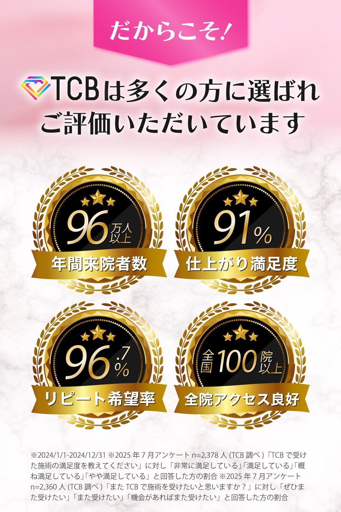
そのパートで見せている内容
「TCBは多くの方に選ばれご評価いただいています」とし、年間来院者数96万人以上、仕上がり満足度91%、リピート希望率96%、全国100院以上を大きく表示する。
読者心理に対する役割
詳しく読まなくても、数字の大きさで「なんかすごそう」「安心できそう」と感じさせる。96、91、96、100といった大きい数字や桁の印象で、直感的な信頼を作る。全国100院以上は、通いやすさだけでなく、大手で安心という印象にもつながる。
売れている理由
ダニエル・カーネマンのシステム1/システム2で言えば、システム1にアプローチしている。読解や計算を必要とするシステム2ではなく、パッと見たときの直感に「すごそう」「安心できる」と入れることで、行動前の抵抗を下げる。
横展開時に真似るべき点/変えるべき点
真似るべきは、詳細読解しなくても安心できる数値や実績を出すこと。変えるべきは証明の種類。来院者数、満足度、リピート率、店舗数、医師数、症例数、口コミ数など、商材で最も信頼に効くものを選ぶ。
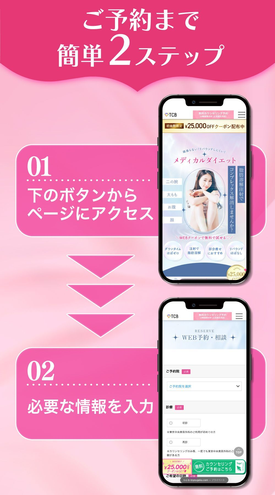
そのパートで見せている内容
「ご予約まで簡単2ステップ」。STEP01は下のボタンからページにアクセス、STEP02は必要な情報を入力。スマホ画面で遷移先ページと入力フォームを見せる。記事内で見せた予約手順と実際の遷移先フォームは完全に一致させている。
読者心理に対する役割
CTAを押した後に何が起きるかわからない不安を消す。広告経由で来ている読者は、この先に進んで大丈夫か、本当に言っていることは本当か、怪しいページに飛ばないかを不安に思う。事前に実画面を見せることで、安心して進みやすくする。
売れている理由
費用不安の次に残りやすいフォーム遷移不安を潰している。簡単2ステップで手軽さを出し、スマホ画面で具体的な行動イメージを作る。行動前の不確実性を減らすことで、ボタンを押すハードルを下げる。
横展開時に真似るべき点/変えるべき点
真似るべきは、遷移後に何が起きるかを実画面で見せること。変えるべきは、商材ごとのフォーム画面、入力項目、遷移先FV。記事内の説明と実際の遷移先がズレると不安払拭にならないため、必ず一致させる。
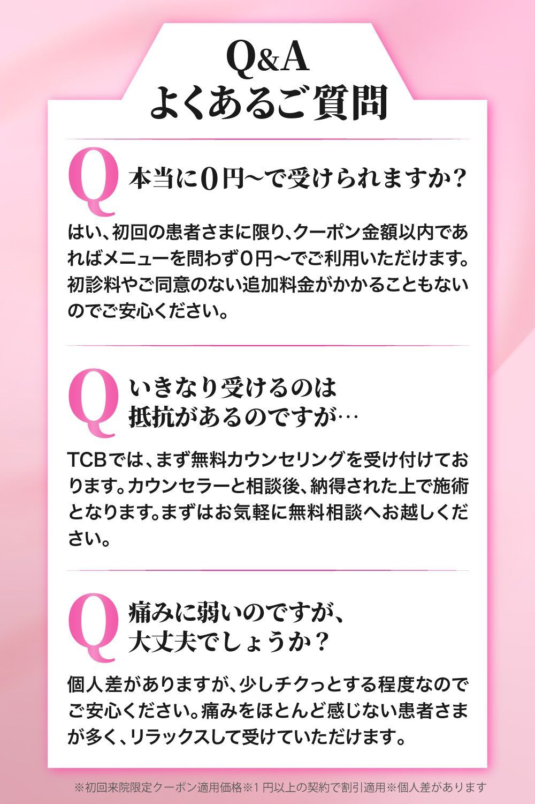
そのパートで見せている内容
Q&A形式で、1つ目は「本当に0円〜で受けられますか？」。初回患者に限り、クーポン金額以内であればメニューを問わず0円〜、追加料金なしと答える。2つ目は「いきなり受けるのは抵抗があるのですが…」。まず無料カウンセリング、相談後に納得した上で施術と答える。3つ目は「痛みに弱いのですが、大丈夫でしょうか？」。少しチクっとする程度、痛みをほとんど感じない患者が多い、リラックスして受けられると答える。
読者心理に対する役割
FAQは懸念払拭であり、同時に社会的証明でもある。「よくある質問」と書くことで、同じ不安を持つ人が他にもいる、自分だけではない、と感じさせる。その上で大丈夫だと回答するため、不安を正常化しながら下げられる。
売れている理由
0円に対しては、ただ0円と言うだけだと怪しい。初回患者限定、クーポン金額内という条件があることで、逆に納得感が出る。いきなり施術される不安には無料カウンセリングを先に出し、痛み不安にはチクっとする程度、受けている患者が多いという説明で安心させる。
横展開時に真似るべき点/変えるべき点
真似るべきは、記事前半で触れた不安をFAQで再度「本当に大丈夫？」レベルまで回収すること。変えるべきはFAQの中身。商材ごとに、最後まで残りやすい費用、痛み、効果、手間、契約、個人情報、来店、周囲バレなどを選ぶ。
そのパートで見せている内容
予約ページにアクセスして、必要情報を入力する流れをスマホ画面で見せる。画面内には予約、診断、WEB予約・相談などが見える。
読者心理に対する役割
ボタンを押した後の未知を既知に変える。怪しいサイトに飛ぶのではない、こういうページに行ってこう入力するだけ、という具体的な想像ができる。
売れている理由
CTA時点で2番目に大きいフォーム遷移不安を直接潰している。広告経由の読者は、この先大丈夫かという警戒があるため、遷移先と入力内容のデモンストレーションが効く。
横展開時に真似るべき点/変えるべき点
真似るべきは、実際の遷移先と一致した画面を見せること。変えるべきはフォーム内容。CV地点がLINE追加、電話、資料請求、診断、予約などで変わるなら、その後に起きることを具体的に見せる。
そのパートで見せている内容
「ミニも余裕の盛れるスタイルに近づく」という表現。ミニスカート、タイトな服、体型が出る服を着られるようなイメージを置いている。Q2でも、着たい服が着れない、スラっと綺麗な人、彼氏と会う時を出している。
読者心理に対する役割
単に足が細くなるではなく、細くなった後の生活シーンや自己イメージへ接続する。若年女性にとっては、服、SNS、彼氏、街中で見る綺麗な人への憧れが購買欲求に近い。
売れている理由
機能ベネフィットだけで終わらず、情緒ベネフィットに変換している。脂肪細胞にアプローチ、最短2から3日、最短10分という機能説明の先に、盛れるスタイル、着たい服、彼氏と会う自信がある。
横展開時に真似るべき点/変えるべき点
真似るべきは、商材の機能を生活の変化に翻訳すること。変えるべきは生活シーン。男性ならモテる、仕事で見られ方が変わる、高齢層なら若々しく見える、痛みが減って生活しやすいなど、ターゲットの欲しい未来に変換する。
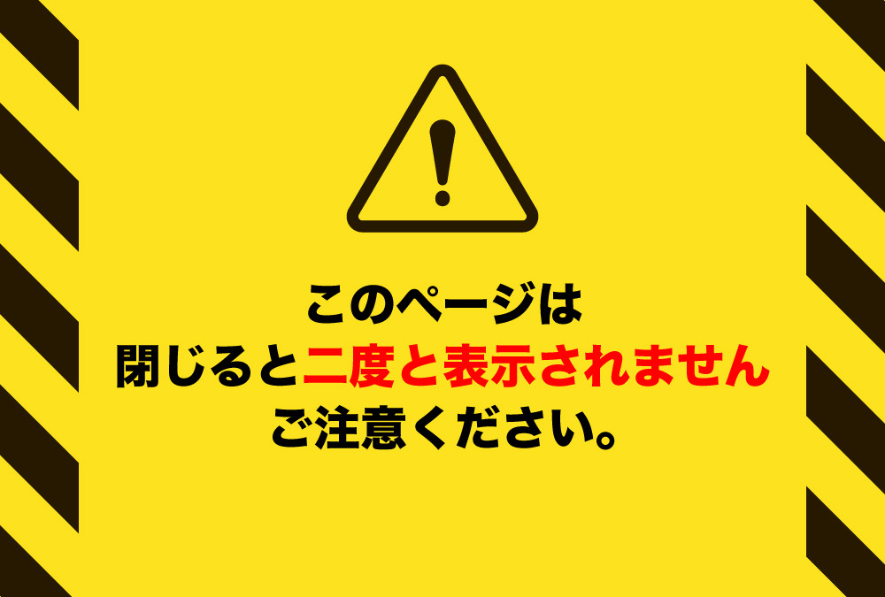
そのパートで見せている内容
黄色と黒の警告デザイン、三角のびっくりマーク、「このページは閉じると二度と表示されません ご注意ください。」という文言。FV上部にも「このページは検索しても出てきません」がある。
読者心理に対する役割
人間は現状維持を好むため、ポチる、フォームに進むという行動には抵抗がある。そこで、今閉じると戻れない、今しかない、という損失回避を出し、背中を押す。文言上は押してとは言っていないが、暗に「今進まないと損する」と伝えている。
売れている理由
手順で「簡単」「安心」を見せた後に、最後に「今動かないと失う」を置くことで、行動しない理由を減らしている。警告デザインは無意識に注意を引くため、最後までスクロールした読者の目に止まりやすい。
横展開時に真似るべき点/変えるべき点
真似るべきは、最後に損失回避で現状維持を崩すこと。変えるべきは限定性の根拠。ページ再表示不可、クーポン期限、初回限定、人数限定、当日枠など、事実として成立するものに合わせる。
4. 抽象化：今後の記事制作者が制作時に考えるべき10個
- CRで取れている需要に対応する記事があるかを確認する。
広告で足痩せが取れているのに、記事が足痩せに対応していないなら、そこが最優先の制作機会になる。 - 市況が拾っていない悩みの切り口を探す。
市場が部分痩せを扱っていても、お腹中心なのか、足特化が薄いのかまで見る。穴は大カテゴリではなく、悩みの切り口にある。 - 勝ち構造は流用し、訴求と心理導線は商材に合わせて置き換える。
今回はピコ女性ステップアンケの構造をほぼそのまま使い、中身を足痩せ・セルライト・脂肪溶解注射に変えた。 - 顕在層には「知らない情報」より「踏み切れない理由の回収」を優先する。
脂肪溶解注射を知っている人には、効果、リバウンド、痛み、費用、フォーム遷移などの不安を言語化して回収する。 - FVは部位単体ではなく、読者が欲しい理想状態を見せる。
足痩せだから足だけ見せるのではなく、全身で見た時のスタイル、可愛さ、服が似合う未来を見せる。 - 質問は、悩み、情景、解決策への不安の順で置く。
Q1で問題認識、Q2で共感とシーン想起、Q3で踏み切れない理由を言語化する。 - 感情で欲しくさせた後に、原因説明やUSPで論理的に納得させる。
コンプレックスや理想像で感情を動かし、脂肪細胞の数、直接アプローチ、高濃度成分、短時間施術で論理を入れる。 - 不安は出すだけでなく、直後に理由つきで回収する。
リバウンドほぼなし、実感しやすい、痛み・キズ跡ほぼなし、0円などは、必ず理由や条件を添える。 - CTAはデザイン統一より、目立つ・押せる・怖くないを優先する。
色をズラす、動かす、無料カウンセリング、予約枠チェックなどで、押す場所と押しても大丈夫な感じを作る。 - 最後は手順の可視化と損失回避で、行動しない理由を減らす。
フォーム遷移後の画面を見せ、簡単2ステップで手軽さを出し、閉じると二度と表示されないなどで最後の背中を押す。
横展開時の考え方
| 観点 | 残すべき要素 | 変えるべき要素 |
|---|---|---|
| 構造 | 悩み認識、情景想起、不安言語化、解決策、USP、CTA、追加教育。 | 解決策を知らないターゲットなら、解決策認知の教育を追加する。 |
| FV | 読者が欲しい理想状態を一番強く見せる。 | 商材ごとの理想像。足痩せなら全身モデル、別商材なら顔、肌、生活シーン、BAなど。 |
| 質問 | 問題、情景、不安の順番。 | 選択肢はCR、市場、ターゲットの実体験に合わせる。 |
| デザイン | ターゲットに「自分向け」と感じさせる。 | 若年女性ならピンク・可愛い。中高年女性なら肌色系・明朝体・丁寧。男性なら黒・青など男性向けに見える色。EC系なら赤・青・黄色など原色で強く見せる選択もある。 |
| 教育量 | 顕在層には踏み切れない理由の回収を優先。 | 潜在寄りなら、解決策の存在や他の解決策の問題点を先に教える必要がある。 |
| CTA後 | 前半で動かなかった人向けに、追加の懸念払拭を置く。 | 商材ごとに、費用、フォーム、痛み、契約、個人情報など残る不安を変える。 |
5. チェックリスト化
次回制作時に、はい/いいえで確認できる粒度のチェックリスト。
- 自社CRで取れている訴求を確認したか？
- そのCR訴求に対応する記事が既にあるか確認したか？
- 市況や競合が拾えていない悩みの穴を特定したか？
- ターゲットの年齢、悩み、配信状況、利益状況がつながっているか？
- 勝ち記事の構造を使う場合、どの構造を残すか明確にしたか？
- 商材に合わせて、質問、選択肢、USP、FAQを置き換えたか？
- FVで読者の理想像を一番強く見せているか？
- FVでBAを出すべきか、理想像を出すべきかを判断したか？
- モデルや素材は、ターゲットが「こうなりたい」と思えるものか？
- CRで取れているコピーを記事内に移植しているか？
- Q1で読者の悩みを再認識させているか？
- Q2で悩みが発生する生活シーンを想起させているか？
- Q3で解決策に対する不安を言語化させているか？
- 質問の表面上の役割と裏面の心理設計を分けて設計したか？
- 進捗バーや選択状態で、アンケートを最後まで進めやすくしているか？
- 共感パートで、読者が過去に試したが変わらなかった努力を拾っているか？
- 読者を責めず、悩みの原因を構造やメカニズムで説明しているか？
- 解決策が、その原因にどうアプローチするか説明しているか？
- BAや症例は、読者が気にする角度や部位を見せているか？
- 効果不安、リバウンド不安、痛み不安、費用不安を出しているか？
- 不安を出した直後に、理由つきで回収しているか？
- 料金不安に対して、価格、条件、追加料金の有無を説明しているか？
- 0円など強いオファーに、なぜ成立するかの条件を添えているか？
- 社会的証明は、パッと見で「すごそう」と感じられる見せ方になっているか？
- CTAは記事全体から目立つ色・動きになっているか？
- CTA文言は、予約確定ではなく低ハードルな行動に見えているか？
- CTAまでで納得した人を一度刈り取る構造になっているか？
- CTA後に、まだ残っている不安を追加教育で回収しているか？
- フォーム遷移後に何が起きるか、実画面で見せているか？
- 記事内の予約手順と実際の遷移先フォームが一致しているか？
- FAQで「本当に大丈夫？」という最後の不安を回収しているか？
- 最後に、行動しない理由を減らす限定性や損失回避を置いているか？
- 機能ベネフィットだけでなく、生活シーンや感情ベネフィットに接続しているか？
- ターゲットが顕在層か潜在層かによって、教育量を調整しているか？
- 表面的なUIではなく、そのUIが起こす心理効果まで説明できるか？
補足：実績・参照情報
AXAD実績
条件: 2026-04-20から2026-05-31、案件 TCB-脂肪溶解からだ女性、記事番号 013。
| 指標 | 数値 |
|---|---|
| 広告費 | 24,650,433円 |
| クリック | 62,840 |
| CV | 2,415 |
| 売上 | 34,413,750円 |
| 利益 | 9,763,317円 |
| CVR | 3.84% |
| CPA | 10,207円 |
| ROAS | 139.6% |
配信面別
| 配信面 | 広告費 | CV | 利益 | CPA | ROAS |
|---|---|---|---|---|---|
| META | 23,238,557円 | 2,318 | 9,792,943円 | 10,025円 | 142.1% |
| YouTube | 1,077,841円 | 92 | 233,159円 | 11,716円 | 121.6% |
| TikTok | 334,035円 | 5 | -262,785円 | 66,807円 | 21.3% |
課別
| 課 | 広告費 | CV | 利益 | CPA | ROAS |
|---|---|---|---|---|---|
| TM1-3 | 14,523,375円 | 1,430 | 5,854,125円 | 10,156円 | 140.3% |
| TM1-1 | 7,261,429円 | 717 | 2,955,821円 | 10,128円 | 140.7% |
| TM1-2 | 1,102,174円 | 120 | 607,826円 | 9,185円 | 155.1% |
| 新規グロース部 | 1,077,841円 | 92 | 233,159円 | 11,716円 | 121.6% |
| TM2-1 | 685,614円 | 56 | 112,386円 | 12,243円 | 116.4% |
担当者別上位
| 担当者 | 課 | 広告費 | CV | 利益 | CPA | ROAS |
|---|---|---|---|---|---|---|
| ゆうのすけ | TM1-3 | 9,838,848円 | 1,037 | 4,938,402円 | 9,488円 | 150.2% |
| りゅうちゃん | TM1-1 | 5,250,377円 | 557 | 2,686,873円 | 9,426円 | 151.2% |
| 陽人 | TM1-3 | 3,615,189円 | 339 | 1,215,561円 | 10,664円 | 133.6% |
| 加藤 | TM1-2 | 654,044円 | 81 | 500,206円 | 8,075円 | 176.5% |
利益上位キャンペーンの傾向
TM1-3_ゆうのすけ_..._記事013_kei足特化喋り_年齢_太ももどろっと_詰め合わせ_1865+が利益1,767,459円、CV266、CPA7,605円。kei足特化喋り、足痩せオファー本編、太ももどろっと、足太い、太もも特化雑学、可愛い足太、彼氏より足太いなどが上位に並ぶ。- この傾向から、記事側の足痩せ特化、太もも悩み、セルライト/どろっと系、若年女性の見た目コンプレックスとの相性が良かったと解釈できる。
Beyondデータの扱い
添付されたBeyondデータでは、2026-04-01から2026-05-31で、PV103,190、CLICK22,462、CTR21.77%、CV2,252、CVR10.03%、CTVR2.18%、FVER49.9%、SVER46.33%、FSVER96.23%、OAR68.7%。ただし、ステップアンケート記事の構造上、Beyondの中間離脱系指標はそのまま解釈しない。現時点で確実に見るのはFVER49.9%。FV離脱は約半分という扱いにする。
想定外だった点・迷い・次回改善
- 想定外だった点は、売れるとは思っていたが、ここまで売れるとは思っていなかったこと。作成前の想定は利益100万から200万円程度だったが、5月末時点で900万円以上の利益になった。
- 失敗・迷い・捨てた案は特にない。3C分析の時点で、お腹痩せや全身痩せではなく足痩せ特化に決めていた。高級感デザインも検討していない。BAファーストビューも考えていなかった。
- 次に改善するなら、「実は痩せない原因は脂肪細胞の数だった」の教育を厚くする。もともと脂肪細胞が多い人は何をやっても太りやすい、という説明を追加すると、納得感がさらに強くなる。